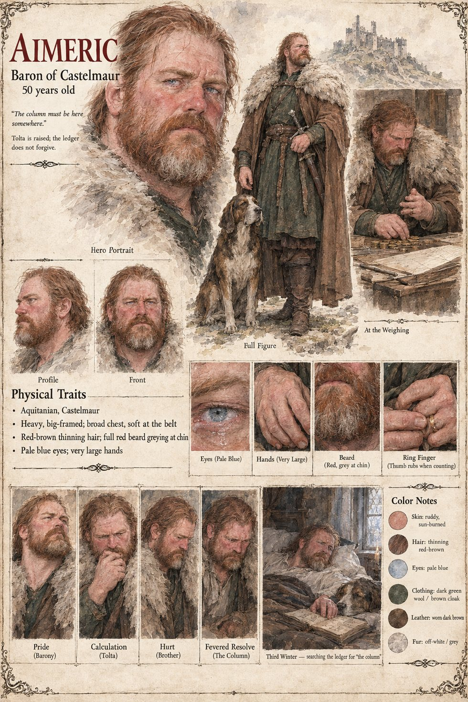

Aimeric of Castelmaur
Baron of Castelmaur · lord of Vilarnau · brother of Guilhem · 50 years old
A heavy, red-bearded, big-handed man of fifty who inherited a barony and a temper and was never taught to tell them apart, and who has a wife of twenty-three, Lady Adalaïs, whom he does not understand and is a little afraid of, and a great grey hound called Ors. He is not a cruel man. He thinks of his villages as a field that grows money if it is correctly weeded; he cannot swim, and has built, in consequence, a very large castle on a very high rock. His younger brother Guilhem, sent to seize a weir on the Sarrac, is held for four hundred solidi, and the baron does the sum until it is a rosary: of nine hundred a year, six hundred arrive as sheaves and labor-days and cannot be paid to anyone. He raises the tolta from a tenth to a sixth and adds a hearth-penny of two denarii a chimney, and when his chaplain says that the villages may find it heavy, he says they are not being asked to like it, that it is a single winter, and that he will remit the whole when his brother is home. He means it.
A stone that is a place where grain is weighed does not interest him until it breaks his masons' wedges, and on the green his own dog is undecided for one second. He orders the village burned on a report he is glad to hear. It yields sixty-one solidi, against a village that paid thirty-eight a year for ever; he sees the error in the second week of Kerren, and Guilhem dies on the fourteenth of Lorren, forty-two days before the sum was due. Lady Adalaïs goes home in the second spring; villages empty in the night; he dies in the third winter of a fever in the long cold chamber, with Ors across his bed, turning the pages of his ledger and saying to nobody, in a puzzled voice, that he cannot find the column. The sheet's pale blue eyes and thinning red-brown hair are its own.